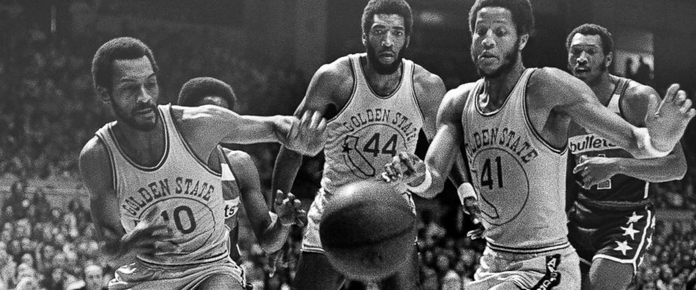
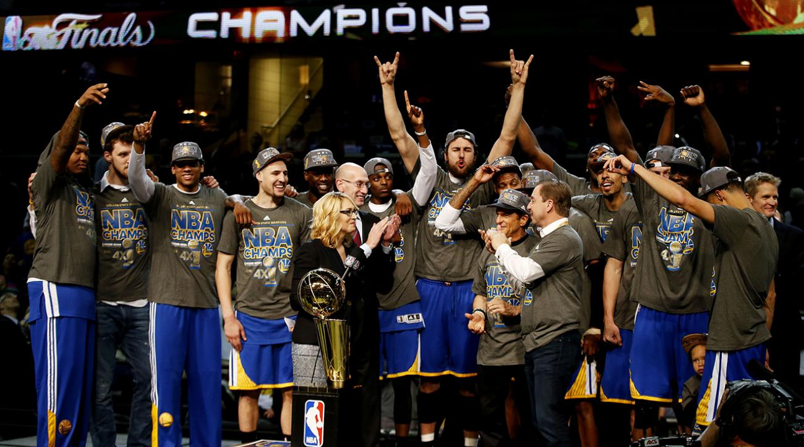
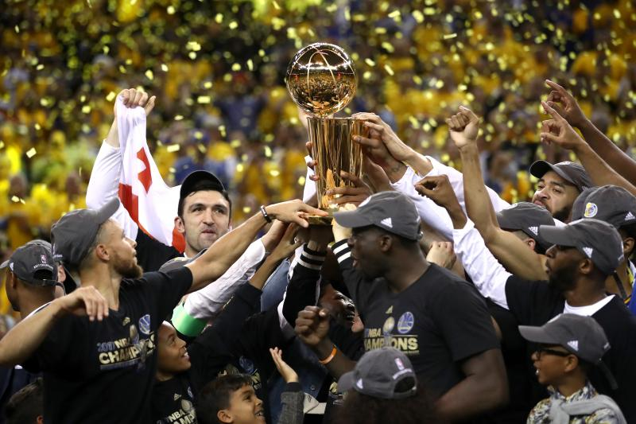

The Winner NBA 1975 Golden State Warriors |
|
 The 1975 NBA World Championship Series was the championship round of the 1974–75 NBA season of the National Basketball Association. The Golden State Warriors (48-34) of the Western Conference played against the Washington Bullets (60-22) of the Eastern Conference. The series was played under a best-of-seven format. |
The Winner NBA 2015 Golden State Warriors |
|
 The 2015 NBA Finals was the championship series of the 2014–15 season of the National Basketball Association (NBA) and the conclusion of the season's playoffs. The Western Conference champion Golden State Warriors defeated the Eastern Conference champion Cleveland Cavaliers in six games (4–2) for the Warriors' first title in 40 years and their fourth in franchise history, becoming the first team since the 1990–91 Chicago Bulls to win a championship without any prior Finals experience from any player on their roster. Golden State's Andre Iguodala was named the Finals Most Valuable Player (MVP). |
The Winner NBA 2017 Golden State Warriors |
|
 The 2017 NBA Finals was the championship series of the National Basketball Association (NBA)'s 2016–17 season and conclusion of the season's playoffs. The Western Conference champion Golden State Warriors defeated the defending NBA champion and Eastern Conference champion Cleveland Cavaliers 4 games to 1. This Finals was the first time in NBA history the same two teams had met for a third consecutive year. The Cavaliers sought to repeat as champions after winning the championship in 2016, while the Warriors won the first meeting in 2015. Golden State earned home court advantage with a 2016–17 regular season record of 67–15, while Cleveland finished the regular season with a 51–31 record. The Warriors entered the 2017 Finals after becoming the first team in NBA playoff history to start 12–0, while the Cavaliers entered the 2017 Finals with a 12–1 record during the first three rounds of the postseason. The Warriors' 15–0 start in the playoffs is the most consecutive postseason wins in NBA history and their 16–1 record is the best winning percentage (.941) in NBA Playoff history.[2][3] |